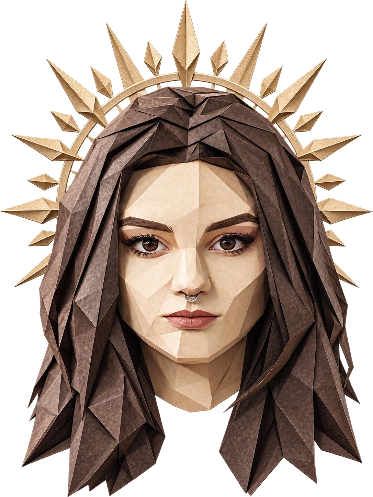
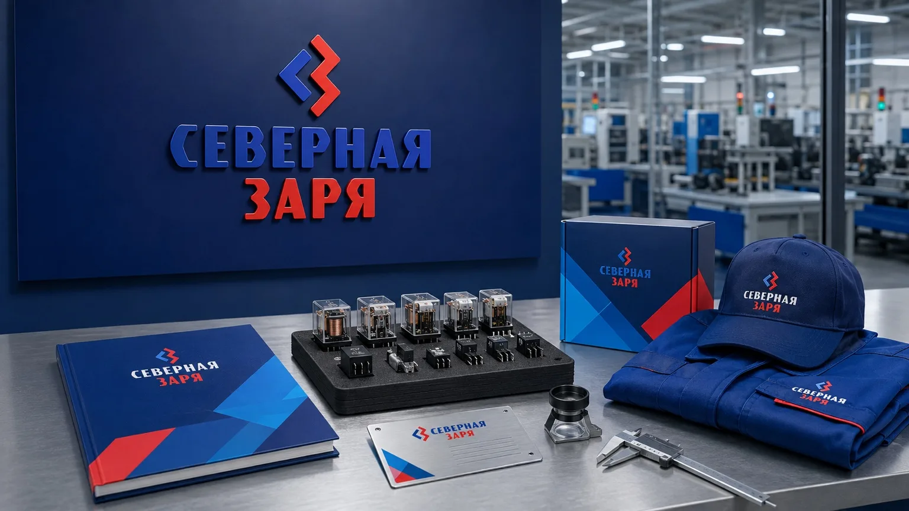
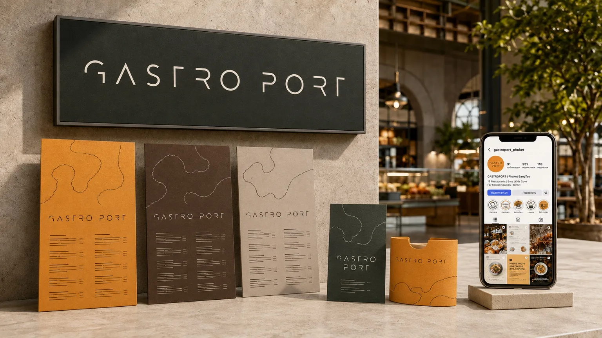
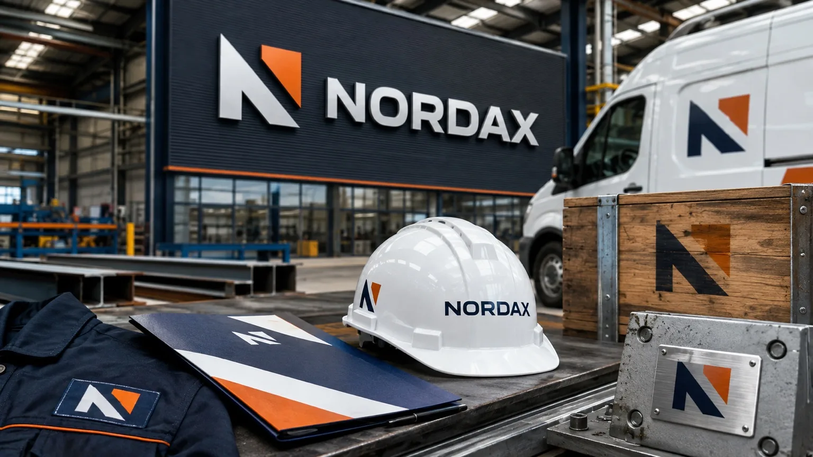
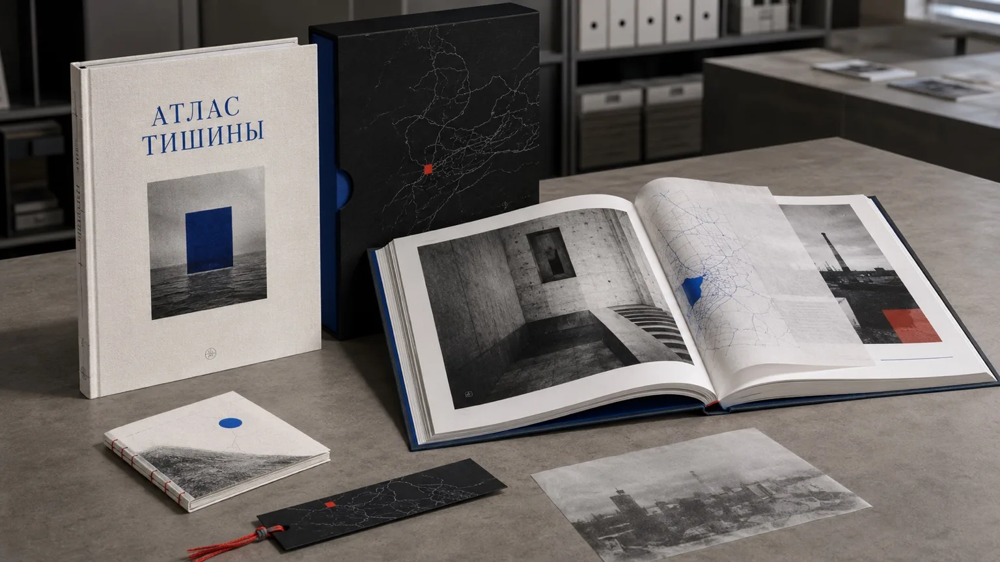
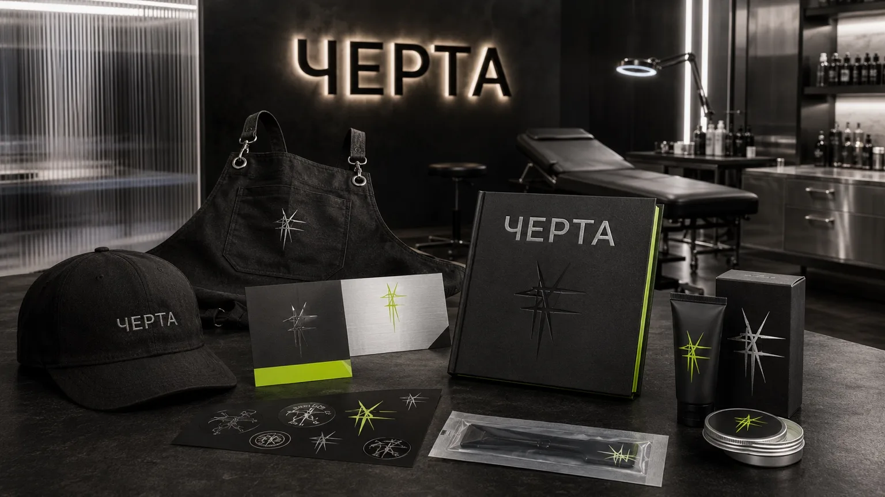
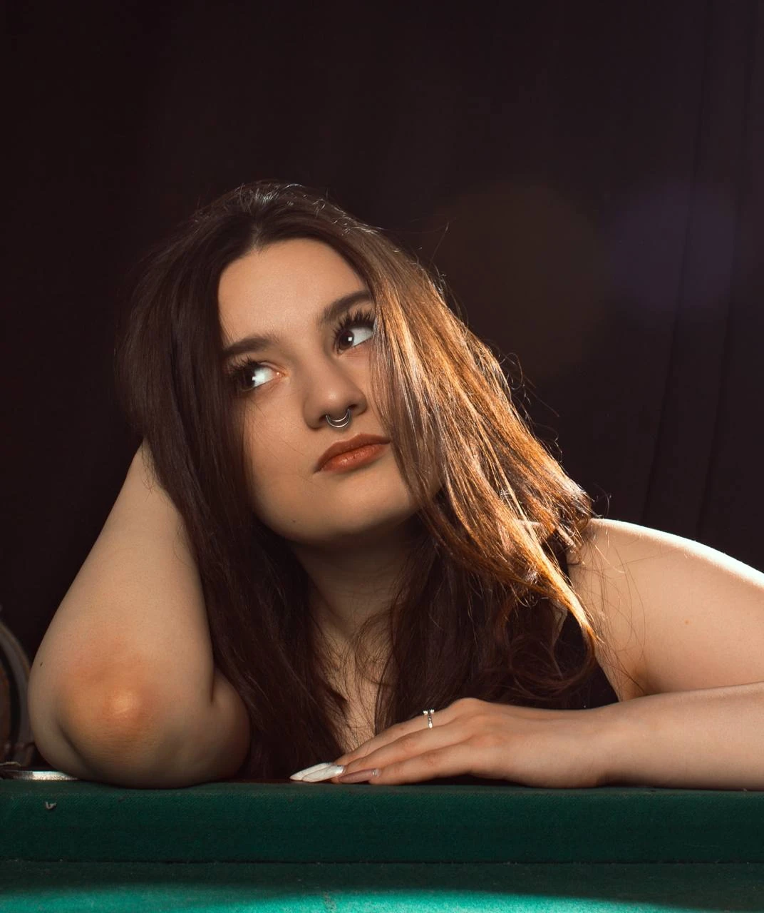

ГОВОРИ
Образ речи в логотипе, иллюстрациях и оформлении образовательного проекта.
Портфолио / Графический дизайн
Айдентика, упаковка
и полиграфия.
Разрабатываю визуальный образ бренда и переношу его на печатные и цифровые носители.
Открыта к предложениям о работе

Форма. Характер. Детали.02 / Проекты
Четыре учебных проекта:
от логотипа до серии носителей.
Образ речи в логотипе, иллюстрациях и оформлении образовательного проекта.

Визуальный язык городского арт-проекта об историях, чувствах и воспоминаниях.

Книга о коммуникации и дневник снов, объединённые графикой и типографикой.

Растительный знак, цвет и паттерн в оформлении ресторанной упаковки.
Реализованные и учебные работы





03 / Авторская практика
Моя творческая мастерская: ручная работа, предметный дизайн и 3D-печать.
Работа с материалами дополняет мою графическую практику. Здесь идеи приобретают форму предметов — от свечей и декора до подарочных наборов.
Открыть мастерскую
04 / Обо мне
Графический дизайн
и внимание к реализации
Я графический дизайнер. Работаю с айдентикой, упаковкой, полиграфией и редакционными проектами.
Мне интересен весь путь: разобраться в задаче, найти визуальную идею, выстроить композицию и подготовить материалы для использования. В портфолио представлены реализованные и учебные работы.
Объясняю решения через задачу, аудиторию и ограничения. Обсуждаю обратную связь и дорабатываю результат вместе с командой.
Работу графическим дизайнером или UX/UI-дизайнером. Основная специализация представленных здесь проектов — графический дизайн.

Также использую AI-инструменты для поиска идей и работы с изображениями. В авторской практике работаю с формой и 3D-печатью.
КТМУ · профильное образование
ВШТЭ · технологическое направление
Учитываю формат, цветовую модель, вылеты, безопасные зоны и требования к передаче файлов.
Аудитория, контекст, сроки и ограничения.
Идея, референсы и аргументы в пользу решения.
Графика, типографика и адаптация к носителям.
Проверка макетов и организация файлов.
05 / Контакты
Рассматриваю предложения о работе в графическом дизайне и UX/UI. Напишите о роли и задачах — обсудим, чем я могу быть полезна.
{kind=link}
{kind=link}
{kind=link}
{kind=link}
{kind=link}